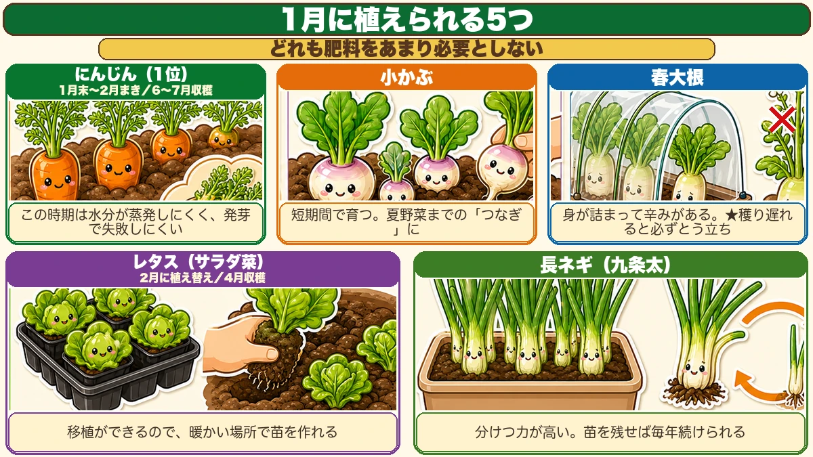
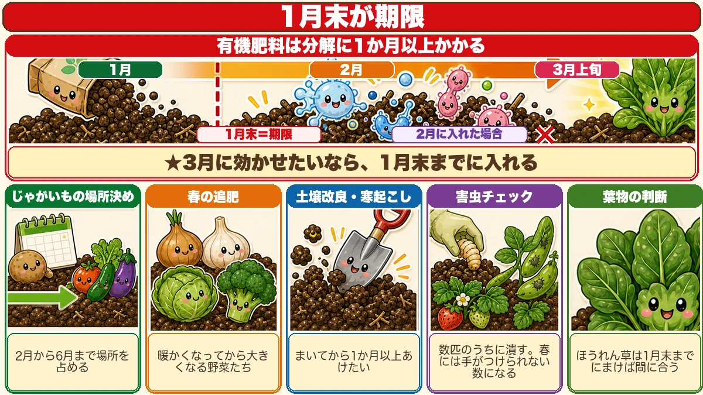
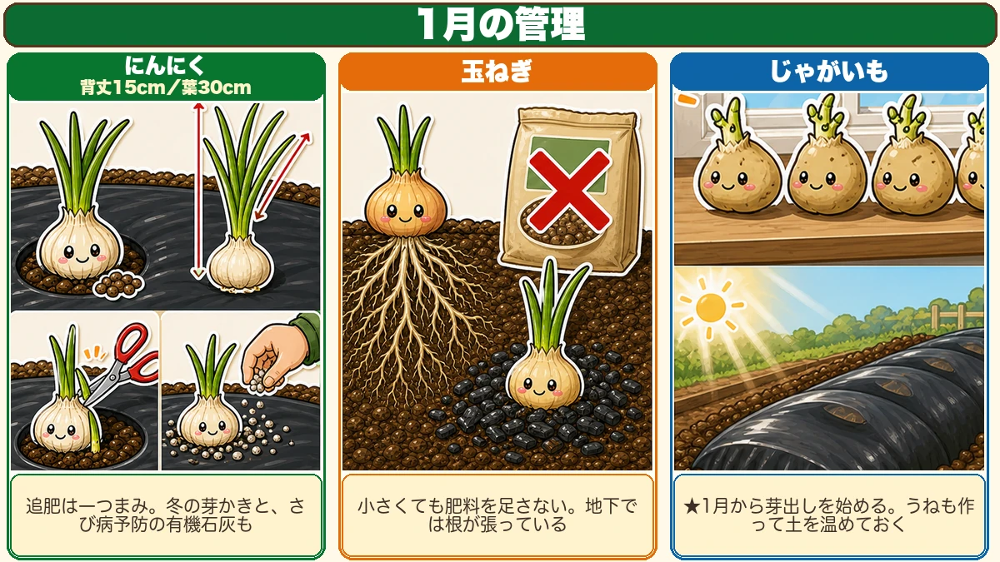

【1月にまく・植える野菜】みんなが休む月に、差がつきます🌱

🗨️「1月は畑、お休みでいいよね」
🗨️「何もできない時期でしょう？」
🗨️「春になったら本気出そう」
どうも、8150（えいこう）です🌱 家庭菜園歴8年、理科の教員免許を持っていて、有機・無農薬で野菜を育てています。
毎月お届けしている「今月なにをまく・植えるか」の定期便、1月号です。
先に、この記事でいちばん言いたいことを言っておきますね。
1月にスタートを切る人が、いちばん得をします。
理由は単純です。
2月3月になると、夏野菜の準備でやることが目白押しになります。育苗、土づくり、じゃがいもの場所決め。全部が一度に来る。
そして1月は、1年でいちばん畑仕事が少ない月です。
★同じ作業量でも、分散させれば1回あたりの負担が減る。だから前倒しできるものは、ここに寄せる。
ほとんどの人が休むこの月に動けるかどうかで、春が変わります☺️
※以下の時期は中間地（関東〜関西の平野部）が目安。寒い地域は少し遅らせ、暖かい地域は少し早めに✨️
今月の畑は、こんな状態
1月は、確かに植えられるものが少ない月です。一般的には「2月から始めるのがおすすめ」と言われます。
でも、★ちょっとした工夫で1月から栽培できます。
そして、この時期にしかない良さもあるんです。
★実は、発芽で失敗しにくい月です
これは意外に思われるかもしれません。
夏のタネまきが難しいのは、なぜでしょうか。虫でしょうか。暑さでしょうか。
いちばんの理由は、★土の表面がすぐ乾いて、タネが干からびるからです。
1月は、その心配がありません。気温が低くて日照も短いので、★水分が蒸発しにくい。
★発芽までの日数はかかります。でも「乾いて失敗する」という最大の失敗要因がない。
遅いことは、必ずしも不利ではないんですね。時間はかかるけれど確実。それが1月という季節です。
空いたうねを、遊ばせない
もうひとつの考え方です。
大根や白菜を穫り終わったうねが、ぽっかり空いていませんか。そこに次を植えるのは5月、夏野菜からだ、という方が多いと思います。
でも、★1月から5月まで4か月も空けておくのはもったいない。
しかも★うねは空けておいても回復しません。むしろ何か植わっていたほうが、土の微生物が保たれます（緑肥と同じ理屈ですね）。
そこで「つなぎの野菜」を作る。★夏野菜が始まるまでの、ワンチャンスの収穫です。
1月に植えられる5つ

★①にんじん
この時期に植えるものの中で、群を抜いておすすめです。
理由は味です。★スーパーで買ったにんじんとは、甘みも香りも味も全然違います。
そしてもうひとつ、★間引き菜がおいしく食べられる。にんじんの葉は、かき揚げにすると絶品です。売っていないものなので、育てた人だけの特権ですね。
- ★タネまきは1月末〜2月が適期
- ★収穫は6月〜7月
- ★畑に直まきしないと育たないので、しっかりした防寒対策が必要
そして、さきほどの話がここで効いてきます。
★この時期は水分が蒸発しにくいので、にんじんの最大の難関である「発芽」で失敗しにくいんです。
にんじんは発芽さえすれば勝ちの野菜です。時間はかかりますが、乾いて全滅するということがない。夏まきより、むしろ簡単だと思います。
★タネは多めにまいて、確実に発芽させてください。おすすめ品種はベーターリッチ、紅葉2号です。
②小かぶ
★真夏を除いて、いつでも栽培できて短期間で育つ。この便利さが魅力です。
つなぎの野菜として、これ以上ないと思います。
- ★しっかり防寒すれば、4月ごろから収穫
- ★間引き収穫をしながら、何度も穫れる
- ★穫り終わったうねに、すぐ次の野菜を植えられる
何も穫れない時期に、少しずつでも収穫があるのはうれしいものです。
③春大根
大根の第4ラウンドです。9月、10月、11月、そして1月。まく月を変えるだけで、こんなに長く楽しめる野菜も珍しいですね。
★冬に穫った大根とは味が違います。身が詰まって、辛みのある大根になります。
- ★苗作りができないので直まき
- ★簡単でいいのでトンネルをしっかり作って温める
- うまく温めれば4月上旬ごろから収穫
ひとつ注意です。★収穫が遅れると、必ずとう立ちします。ほどほどの大きさになったら穫ってください。★とう立ちしにくい品種を選ぶのも大事です。
④レタス（サラダ菜）
★春早くに収穫するレタスは、最高においしいです。寒さに強く、品種もたくさんあります。
この野菜の強みは、移植ができること。
★暖かいところで苗を作って、ある程度の大きさになったら植え替える。この段取りが使えます。
- ★畑への植え替えは2月ごろ
- ★収穫は4月ごろから
- ★とう立ちする危険があるので、遅れないように収穫する
⑤長ネギ
タネから作るなら、★この時期がおすすめです。
9月10月にまく栽培もありますが、それだと期間が長い。★1月からでも十分な苗ができます。
- ★鉢や箱を使って、暖かいところで育てる
- ★育った苗は5月に畑へ植え替え
- ★できれば8月にもう一度植え替えると、秋から冬に立派なネギが穫れる
初めてなら★九条太ネギがおすすめです。作りやすく、★分けつ力が高い。1本から何本にも分かれます。
そして面白いのがここから。
★苗を少しずつ残しておけば、来年の苗が作れます。無限に続くループですね。
一度始めれば、毎年タネを買わなくてよくなる。こういう野菜は、家庭菜園にとって本当にありがたい存在です。
共通して言えること
この5つには共通点があります。
★小かぶも大根もレタスも、肥料をそれほど必要としません。
だから★他の野菜を収穫した跡地に、肥料を入れずにそのまま植えられます。
1月に土づくりから始めていたら間に合いませんが、この5つならその心配がない。だから「1月でも植えられる」わけですね。
★1月末までに終わらせること5つ

ここからが、この号の本題かもしれません。
★有機栽培は、時間がかかります。
肥料の分解にも、土づくりにも月単位でかかる。だから期限があります。
①じゃがいもの場所を決める
種芋は2月に売り出されます。
見落としがちなのが、★じゃがいもは2月から6月まで、その場所をずっと占めるということ。
夏野菜を植えたい場所と重なると、詰みます。
★1月中旬から場所を決めて、準備を始めてください。
②★春に向けた追肥は、1月下旬まで
これがいちばん大事な期限です。
玉ねぎ、にんにく、春キャベツ、春ブロッコリー。暖かくなってから大きくなる野菜たちです。
★有機肥料は分解に時間がかかります。
野菜が休眠から目覚めるのは3月上旬。そこで効かせたいなら、逆算して1月末には入れておく必要があります。
★2月に入れても、効き始めるころには春が終わっています。
（化学肥料を使っている方は、2月以降でも間に合います）
③土壌改良は1月後半まで
春にまく野菜のために入れたものが、分解しきりません。
★寒起こしも、まいてから1か月以上あけたいので、1月後半には終えてください。
④★害虫チェック
冬は、実は害虫退治の絶好機です。
★土の中で越冬しているさなぎを、掘り起こして撃退できます。
スコップで掘って、害虫だけ取って、土は戻す。それだけです。
そして、これを忘れないでください。
★そら豆といちごにアブラムシがついていたら、春に大繁殖する前に潰しておく。
冬に数匹しかいなくても、春には手がつけられない数になります。★数匹のうちに潰すのが、いちばん効率のいい防除です。
⑤葉物をまくか、休ませるか決める
1月から葉物を育てると、4月ごろまで場所を使います。これも夏野菜の準備に影響します。
★ほうれん草は、1月末までにまけば春野菜の準備に間に合う可能性があります。かなり小さいサイズにはなりますが。
まくか、休ませるか。早めに決めてください。
育てているものの、1月の管理

にんにく
- ★1月に追肥。マルチの穴に一つまみ（鶏ふんなら20粒くらい）
- ★1月時点で背丈15cm・葉30cm近くあれば十分
- ★葉が枯れ始めるのは生理現象。水も追肥も増やさない
- ★雪が降るなら防虫ネットとダンポール。ダンポールは倍に増やす
- ★冬の雑草を根ごと抜く
- ★冬にもう一度出てきた芽を、ハサミで切る
- ★さび病の予防に、有機石灰を1平方メートルに一握り（1〜2月のうちに）
玉ねぎ
- ★中生・晩生は1月に1回目の追肥。2回目は2月
- ★小さくても肥料を足さない。地下では根が張っています
- ★霜柱で浮いたら株元を押さえる。もみ殻くん炭をたっぷり
★じゃがいも
1月にやっておくべき、いちばん大事な作業です。
★芽出しを始めてください。
日の当たる窓辺に種芋を並べておくだけです。★芽が出た状態で植えると、そのあとの生育がまるで違います。
そして★1月のうちにうねを作って、土を温めておく。
じゃがいもは2月初めに植えないと間に合いません。その準備が1月です。
学ぶ：なぜ1月は「発芽で失敗しにくい」のか🔬
理科の時間です。冒頭の話を、もう一歩深めます。
タネが発芽するには、3つが必要です。
- 水
- 酸素
- 適した温度
夏のタネまきで失敗するのは、このうち★水が続かないからです。
夏は、水が逃げていく
夏の畑を思い出してください。朝しっかり水をやっても、昼過ぎには表面が白く乾いています。
気温が高いと、水はどんどん蒸発します。日照時間も長い。
タネは一度水を吸って動き始めると、途中で乾くと死んでしまいます。★中途半端に目覚めさせて、そこで水を切らすのがいちばん危ない。
冬は、水が留まる
一方、1月はどうでしょうか。
気温が低いので蒸発が遅い。日照時間も短い。★一度湿った土は、なかなか乾きません。
だからタネは、ゆっくりでも確実に水を吸い続けられます。
★発芽までの日数はかかります。でも「途中で乾いて死ぬ」ということが起きにくい。
遅いことは、不利ではありません
ここが面白いところだと思っています。
早く芽が出るほうが良さそうに感じますが、★大事なのは「そろって出ること」です。
夏まきは早いけれど、まばらになりやすい。冬まきは遅いけれど、そろいやすい。
にんじんのように「発芽さえすれば勝ち」という野菜にとって、1月は実はやさしい季節なんですね。
お子さんと一緒なら
★同じタネを、夏と冬にまいて記録を比べてみてください。
- 芽が出るまでの日数
- まいた数のうち、何本芽が出たか
夏は「早いけれど、まばら」。冬は「遅いけれど、そろう」。
数字にすると、季節の性格がはっきり見えてきます。畑のノートに書いておけば、そのまま来年の判断材料になりますよ🌱
まとめ
ここまで読んでくださって、ありがとうございます！
1月は、休む月ではなく、前倒しする月です。ポイントを整理しておきますね。
- ★2月3月は夏野菜の準備で手一杯になる。1月に前倒しできるものを寄せる
- ★1月は水分が蒸発しにくいので、実は発芽で失敗しにくい。遅いけれど、そろう
- 植えられる5つ ー ★にんじん（1位）・小かぶ・春大根・レタス・長ネギ。★どれも肥料をあまり必要としない
- ★1月末が期限 ー じゃがいもの場所決め／春の追肥／土壌改良／害虫チェック／葉物の判断
- ★有機肥料は分解に1か月以上。3月に効かせるには1月に入れる
- ★じゃがいもは1月から芽出しを始める。日の当たる窓辺に並べるだけ
全部やろうとしなくて大丈夫です。まずは今日、台所にあるじゃがいもを1つ、日の当たる窓辺に置いてみてください。芽が出てきます。それが2月の植え付けの準備になります🌱
次回は、そのじゃがいもの話です。種芋1個から12倍にする方法をお話しします🥔
にんじんのタネ（ベーターリッチ）
1月に植えられるものの1位です。発芽までの日数はかかりますが、この時期は土の表面が乾きにくいので、いちばんの失敗要因である「乾いて干からびる」が起きません。夏まきより、むしろ簡単です。
![[商品価格に関しましては、リンクが作成された時点と現時点で情報が変更されている場合がございます。]](https://hbb.afl.rakuten.co.jp/hgb/565b7811.82562bc6.565b7812.698bf113/?me_id=1411559&item_id=10000090&pc=https%3A%2F%2Fthumbnail.image.rakuten.co.jp%2F%400_mall%2Fatelier-plum%2Fcabinet%2Fcompass1684807440.jpg%3F_ex%3D240x240&s=240x240&t=picttext "[商品価格に関しましては、リンクが作成された時点と現時点で情報が変更されている場合がございます。]")

ねぎ苗（九条太）
分けつ力が高いので、1本植えると株が増えていきます。1月に植えておくと、春から夏にかけて薬味に困りません。畑の隅に植えておく「つなぎの野菜」として優秀です。
![[商品価格に関しましては、リンクが作成された時点と現時点で情報が変更されている場合がございます。]](https://hbb.afl.rakuten.co.jp/hgb/56d74d34.06219f7c.56d74d35.87e61065/?me_id=1277514&item_id=10000565&pc=https%3A%2F%2Fthumbnail.image.rakuten.co.jp%2F%400_gold%2Fnaeya%2Fnaeya_1%2Fkonsai%2Fnegi%2Fkuzyohuto3.jpg%3F_ex%3D240x240&s=240x240&t=picttext "[商品価格に関しましては、リンクが作成された時点と現時点で情報が変更されている場合がございます。]")
小かぶのタネ（金町小かぶ）
にんじんと並んで、1月にまける野菜です。金町小かぶは昔からある固定種で、寒さに当たると甘くなります。大根ほど場所を取らず、深く耕さなくていいので、プランターでも育ちます。国内採種の固定種なので、自分でタネを採ることもできます。
![[商品価格に関しましては、リンクが作成された時点と現時点で情報が変更されている場合がございます。]](https://hbb.afl.rakuten.co.jp/hgb/56e76943.db126f41.56e76944.bd847f20/?me_id=1270580&item_id=10012182&pc=https%3A%2F%2Fthumbnail.image.rakuten.co.jp%2F%400_mall%2Ftekutekushop%2Fcabinet%2Fseed%2Fhn130050.jpg%3F_ex%3D240x240&s=240x240&t=picttext "[商品価格に関しましては、リンクが作成された時点と現時点で情報が変更されている場合がございます。]")
不織布
1月にまいたタネには、必ずかけてください。地温が上がって発芽が早まります。かけないと、いつまで待っても出てこないことがあります。
![[商品価格に関しましては、リンクが作成された時点と現時点で情報が変更されている場合がございます。]](https://hbb.afl.rakuten.co.jp/hgb/56bc237a.e97551b1.56bc237b.2513ed10/?me_id=1310260&item_id=10000879&pc=https%3A%2F%2Fthumbnail.image.rakuten.co.jp%2F%400_mall%2Fdiokasei%2Fcabinet%2F007fusyokufu%2F12g%2Fimgrc0092049705.jpg%3F_ex%3D240x240&s=240x240&t=picttext "[商品価格に関しましては、リンクが作成された時点と現時点で情報が変更されている場合がございます。]")
鶏ふん
有機肥料は分解に時間がかかります。1月に入れておくと、ちょうど3月に効いてくる。春の準備を1月に前倒しできるのが、この月のいちばんの得です。
![[商品価格に関しましては、リンクが作成された時点と現時点で情報が変更されている場合がございます。]](https://hbb.afl.rakuten.co.jp/hgb/55e7612a.7de1526b.55e7612b.01a50904/?me_id=1214866&item_id=10002182&pc=https%3A%2F%2Fthumbnail.image.rakuten.co.jp%2F%400_mall%2Fkaju%2Fcabinet%2F00714580%2F03462454%2F07486601%2Fimgrc0071643813.jpg%3F_ex%3D240x240&s=240x240&t=picttext "[商品価格に関しましては、リンクが作成された時点と現時点で情報が変更されている場合がございます。]")